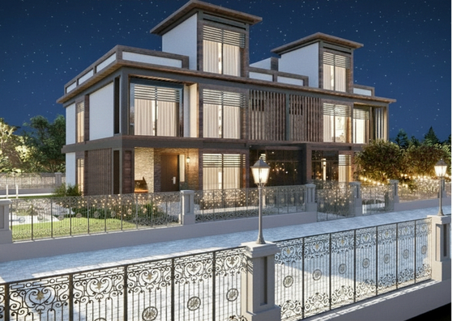

Aşkın İnşaat Mimarlık Yapı, 2011'den bu yana konut, ticari yapı, çelik sistem ve büyük ölçekli proje geliştirme alanlarında hizmet veren kurumsal bir yapı firmasıdır.

Aşkın İnşaat Mimarlık Yapı; proje sürecini yalnızca mimari üretim olarak değil, planlama, uygulama, saha koordinasyonu ve teslim yönetiminin bütünü olarak ele alır. Bu anlayış, her projeye özgü çözümler geliştirme kapasitemizin temelini oluşturur.
Türkiye'de İzmir / Dikili merkezli saha varlığımızı, Birleşik Krallık merkezli kurumsal temsil yapımızla destekliyor; ulusal ve uluslararası projelerde tek yetkili muhatap olarak hizmet veriyoruz.
Referans arşivimizde 2011–2025 dönemine yayılan konut projeleri, geniş ölçekli yerleşim alanları, AVM ve sosyal tesisler, çelik sistem yapılar ve 100'ün üzerinde havuz uygulaması yer almaktadır.
Her ölçekteki yapı projesini, kalite standardını ve teslimat disiplinini ödünsüz koruyarak hayata geçirmek.
Türkiye ve Birleşik Krallık arasında köprü kuran, uluslararası standartlarda proje geliştiren lider bir yapı firması olmak.
2011–2025 dönemine ait tüm referans projelerimizi içeren kurumsal sunum dosyasını inceleyin.
PDF Referans DosyasıSaha kurulumu, şantiye yönetimi ve kontrollü yapım süreçleri. Temel kazısından geçici kabulüne tek muhatap.
Konsept geliştirme, uygulama projesi, cephe tasarımı ve teknik detay yönetimi. İç mekândan kentsel ölçeğe.
Villa, tek katlı yaşam yapısı ve özel planlı hafif çelik sistem uygulamaları. Hızlı kurulum ve uzun ömür.